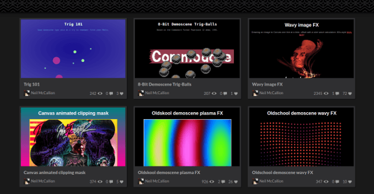
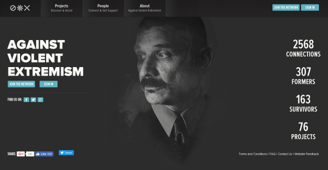

Contact
- @njmcode on Twitter
- njmcode on CodePen
- njmcode on GitHub
- skipley at hotmail dot com
Work (public)
As developer
- Moola [beta] - investment platform web app
- Codepen - regular experiments and tinkering
- Rassvet modular drum machine (as seen in net magazine #268)
- Digimancers (Global Game Jam 2016 hack, winner of Belfast meetup)
- Fusball+ for Google+ Hangouts
- Blank Dedicate A Frame for Disney [inactive]
- Wiiings Editions for Red Bull [inactive]
- GitHub personal repos
As technical lead / producer
Much of my output over the years has been super-secret stuff for clients, so it can't be shown here. Hit me up if you wish to discuss the nature of this work in more detail.
Skills
Web application development
- UI Developer (Senior), Moola (2016-present)
- JavaScript architecture (ES6), patterns, and modular design
- Experience with React + Redux, Angular, Backbone, and other frameworks
- Former developer on production projects for Google, YouTube, Disney, HBO, Red Bull, Samsung, and more
- High performance, including payload splitting, first-render, jank-busting, and critical path optimization
- Progressive web app strategies & techniques: offline, Home Screen etc
- Progressive enhancement, including no-js base builds
- Accessibility and internationalization patterns
- Build tooling via npm scripts, Gulp, and Webpack
- Unit testing and code review
- Experience in Python, PHP and Node backend development
- Git repo management, gitflow model, pull requests etc
- Creative development via CSS3, Canvas, WebGL and Web Audio API
- Browser game development via Phaser, ThreeJS etc
- Functional & technical specifications, documentation writing, etc
Team, project & community leadership
- Co-organizer & community manager, BelfastJS (2015-present)
- Head of Frontend Development, +rehabstudio (2014-2016)
- Senior Developer / Project Lead, +rehabstudio (2011-2014)
- Project scheduling, estimation, scrum mastering and resource management
- JIRA management & configuration
- Technical contact for clients and third-party agencies
- Recruitment and developer outreach
- Staff welfare and events organization
Mentorship & evangelism
- Experience in developing training programs, night classes, and mentorship for junior developers, interns and placement students
- Advocate for industry diversity, performance, accessibility, offline, and the web platform in general
- Frequent game jam / hackathon participant
- Published in net magazine #268: modular development & web audio
- Guest speaker for IMD and CompSci events at QUB and UUJ
Other info
Educated to degree level (BA Hons). Able and willing to travel.
Full references available on request.
I ♥ cake, game playing & development, making music, beer, (occasionally) working out, pro wrestling, cinema, and a bit of indoor bouldering.
I also occasionally write about the above.